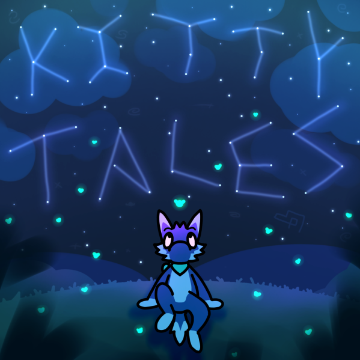

Music Links
Here you can find some (not all) of my music:
-
fox!

My fifth and most recent album, released on April 20th 2025
-
Kitty Tales

My fourth album, released on June 8th 2024
-
Orbit
My third album, released on October 9th 2023
-
Real
My first album, home to my very first songs! Released on June 16th 2020
-
Singles
Some songs that don't belong to any album!